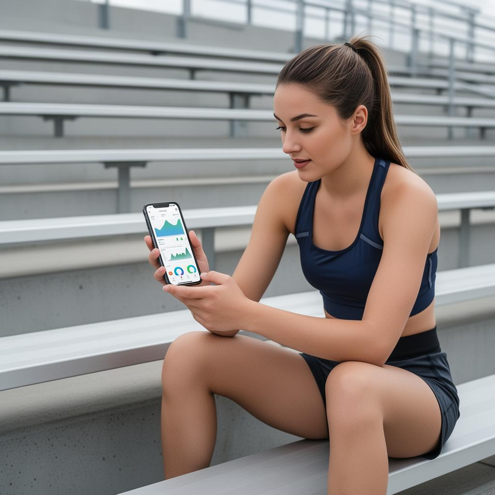
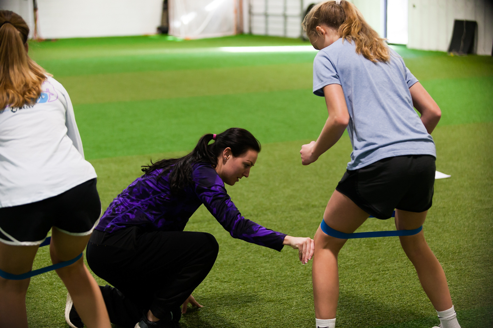

Pilot learnings are shaping the next version of the platform
Insights from early athlete participation are now informing survey refinement, reporting structure, and the design of more practical recovery tools.
SportCARE is a data-driven system that helps schools measure, improve, and optimize athlete recovery, training, and wellbeing.

SportCARE is not a program. It's an operating system for athlete development.
It enables schools to:

Fewer preventable injuries
More consistent performance
Stronger athlete retention
Healthier team culture
What schools focus on
What they miss
Deploy the CARE survey across teams (25–100 athletes). Capture recovery behaviors, training load alignment, team culture, and emotional wellbeing.
Creates a baseline dataset most schools have never had.Translate athlete data into clear gaps in systems, priority intervention areas, and team-specific insights.
No guessing. Just visibility.Deliver athlete + coach training sessions, recovery systems and tools, and structured improvement plans. Then track results post-intervention.
Measure → Diagnose → Improve → Repeat.Strong teams create belonging, trust, and communication. Without this, performance collapses under pressure.
Training must match the athlete — not force the athlete to match the system.
Recovery is the most underdeveloped system in high school sports. It becomes a competitive advantage when done right.
Burnout, anxiety, and pressure don't disappear because a team is winning. They need to be measured and addressed.
Early pilot data reveals critical insights most programs never see.
Injury exposure without structured prevention
Awareness of effective recovery practices
In mental health support access
Demand for individualized training
"This was the first time someone asked how we actually feel — not just how we perform."Student-Athlete
"I didn't realize how bad my recovery habits were until this."Student-Athlete
"Our team communicates way more now. It changed our culture."Student-Athlete
SportCARE is designed for fast deployment and measurable outcomes.
Typical pilot results
20–30% improvement in CARE scores
Increased use of recovery practices
Better injury communication
Stronger team cohesion
Schools receive:
Full CARE survey system
Data reports + insights
Training sessions
Recovery toolkit
Ongoing tracking
Because if it's not easy, it won't be used.
Mobile-first survey experience
Real-time feedback collection
Easy-to-use dashboards
Athlete-accessible recovery resources
Survey flows, recovery check-ins, and athlete-facing guidance presented in a phone-native format.
A concise view of how SportCARE moved from athlete insight to an emerging school sports platform.
Early interviews, observation, and athlete conversations surfaced the same pattern repeatedly: schools trained performance hard, but lacked systems for recovery, emotional wellbeing, and individualized support.
The team translated those findings into the CARE framework and a structured assessment model designed to help schools measure athlete experience in a repeatable, usable way.
SportCARE moved from concept to field testing, gathering pilot responses, validating demand, and identifying the strongest use cases for coaches, athletic directors, and wellness-focused programs.
The current phase focuses on stronger reporting, better athlete-facing mobile experiences, and clearer implementation materials so the system can expand beyond a single pilot environment.
SportCARE is evolving into a broader athlete wellness initiative focused on:
Long-term goal: To establish SportCARE as a standard layer inside school athletic programs.
Insights from early athlete participation are now informing survey refinement, reporting structure, and the design of more practical recovery tools.
SportCARE is moving toward clearer phone-native previews so schools can understand how athletes will actually interact with the system day to day.
The immediate priority is turning pilot credibility into a repeatable model that can support multiple teams, schools, and implementation partners.
Start building a system your athletes actually need.